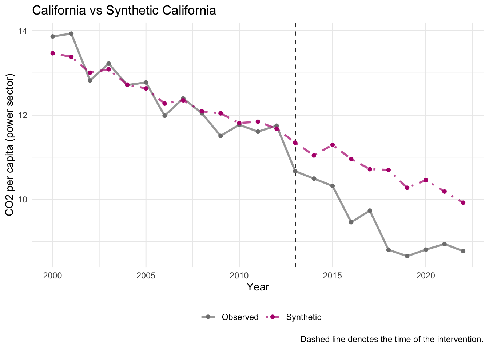
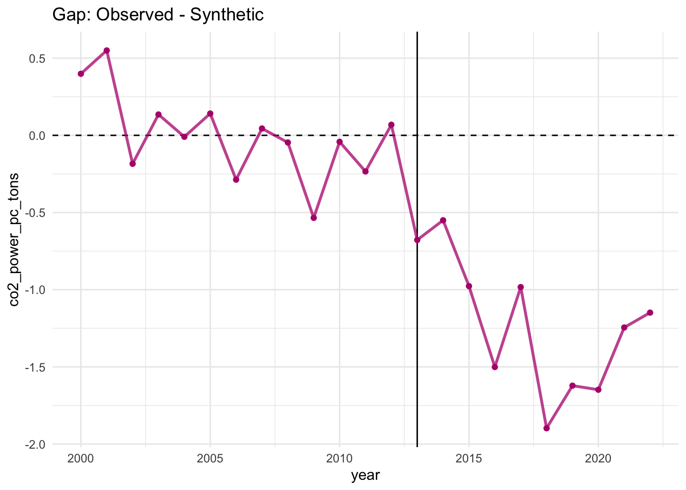
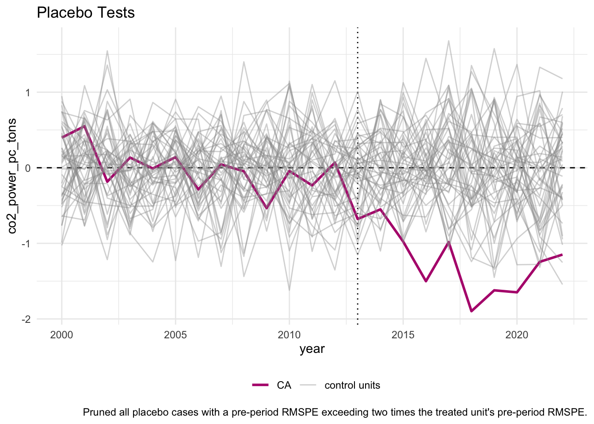

# install.packages("tidysynth")
# install.packages("tidyverse")
# install.packages("patchwork")
library(tidysynth) # for synthetic control
library(tidyverse)
library(patchwork) # for combining plotsSynthetic Control Method Review
Case Study: California Cap-and-Trade Policy (2013)
California’s cap-and-trade program, launched in 2013, places a cap on total greenhouse gas emissions. Firms must hold permits to emit CO₂, creating a market-based environmental regulation. Our evaluation question is: Did this policy reduce emissions?
The Fundamental Problem
We observe California with the cap-and-trade policy. We do not observe California without the cap-and-trade policy. This is the fundamental problem of causal inference in this setting — we need a credible counterfactual.
Why Not Just Compare California to Other States?
A simple comparison of California to other states runs into several problems: states differ in their energy mix, they experience different economic growth trajectories, they follow different environmental trends, and some states have their own cap-and-trade policies. We need a better counterfactual comparison.
Core Idea of Synthetic Control
The solution is to create a “Synthetic California” — a weighted average of states that did not receive the policy treatment. SCM is a data-driven method that chooses weights so that pre-treatment emissions trends match closely (i.e., pre-2013) and covariates match (income, coal share, electricity price).
When Do We Use Synthetic Control?
We use SCM when we have one aggregate unit that receives the treatment (policy) — for example, a city, state, or nation — and we need a group of comparison units to synthesize the control. In SCM, this comparison group is called the “donor pool”.
According to Abadie (2021), SCM works best with:
- One treated unit
- Many potential controls
- A long pre-treatment period (panel data)
- Not too much pre-treatment volatility
- Clear intervention timing
Donor Pool Criteria
Following the approach in Lessmann & Kramer (2024), the donor pool should exclude states with cap-and-trade policies during the measurement period or similar energy policies that would affect emissions (i.e., alternative treatment channels). In their study, excluded states included Connecticut, Delaware, Maine, Maryland, Massachusetts, New Hampshire, New Jersey, New York, Rhode Island, and Vermont.
Seeing the Treatment Effect
If synthetic CA looks like real CA before 2013 (i.e., in emissions), then synthetic CA approximates “what would have happened without cap-and-trade.” The treatment effect at each post-treatment period is the gap between observed and synthetic outcomes.
Before the 2013 policy: Real CA \(\approx\) Synthetic CA.
After the 2013 policy: the gap equals the treatment effect.
Pre-Treatment Fit Is Key to Identification
Good pre-treatment fit is the key credibility condition.If we cannot match trends before treatment, we cannot trust the counterfactual after. When evaluating the pre-treatment fit, consider how many measurement time points are available, the volatility of the trend, and the magnitude of deviations between observed and synthetic California.
TipComprehension Check
- Why can’t we simply pick a single state (e.g., Texas) as a comparison for California? What problems would a simple comparison introduce?
- What does it mean if the synthetic control closely tracks the treated unit in the pre-treatment period? What if it doesn’t?
Lab Overview
Research Question
Did California’s cap-and-trade program (launched in 2013) reduce per capita CO₂ emissions from the power sector?
- \(Y\) (outcome): Per capita CO₂ emissions from the power sector (
co2_power_pc_tons) - Treated unit: California (
CA) - Treatment year: 2013
- Donor pool: Other U.S. states (without similar cap-and-trade policies)
This lab uses a simplified example loosely based on the study by Lessmann & Kramer (2024), with simulated data for teaching purposes. The results should not be interpreted literally as simulated data necessarily includes assumptions that omit complexity found in the original study data.
Predictors
We use the following pre-treatment (2000–2012) averages as predictors to construct the synthetic control:
| Variable | Description | Role |
|---|---|---|
coal_share |
Share of electricity generation from coal | Predictor |
income_pc |
Per capita income | Predictor |
elec_price |
Electricity price | Predictor |
co2_power_pc_tons |
Pre-treatment average of the outcome | Predictor |
These variables capture structural differences in energy systems and economies that influence emissions, ensuring the synthetic California is a meaningful comparison.
In this lab, you will:
- Estimate synthetic California using the
tidysynthpackage - Evaluate pre-treatment fit by comparing observed vs. synthetic trends
- Conduct placebo tests to assess whether the estimated effect is statistically meaningful
- Examine the MSPE ratio for permutation-based inference
- Review the balance table to check covariate matching
TipComprehension Check
Why do we include the pre-treatment mean of the outcome variable (co2_power_pc_tons) as a predictor? What would happen if we only used the other covariates?
Analysis
Setup
Load Packages
Load Data
The dataset contains annual state-level panel data with CO₂ emissions, energy mix, income, and electricity prices. Each row represents a state-year observation.
data <- read_csv(here::here("week7", "data", "ca_captrade_scm_sim_data.csv"))
head(data)Rows: 1150 Columns: 9
── Column specification ────────────────────────────────────────────────────────
Delimiter: ","
chr (1): state
dbl (8): year, treated, baseline_emissions, coal_share, income_pc, elec_pric...
ℹ Use `spec()` to retrieve the full column specification for this data.
ℹ Specify the column types or set `show_col_types = FALSE` to quiet this message.# A tibble: 6 × 9
state year treated baseline_emissions coal_share income_pc elec_price
<chr> <dbl> <dbl> <dbl> <dbl> <dbl> <dbl>
1 AL 2000 0 12.5 0.232 55528. 0.101
2 AL 2001 0 12.5 0.232 55528. 0.101
3 AL 2002 0 12.5 0.232 55528. 0.101
4 AL 2003 0 12.5 0.232 55528. 0.101
5 AL 2004 0 12.5 0.232 55528. 0.101
6 AL 2005 0 12.5 0.232 55528. 0.101
# ℹ 2 more variables: time_trend <dbl>, co2_power_pc_tons <dbl>
TipComprehension Check
How many states are in the donor pool? How many years does the data cover?
Declare the Synthetic Control
This is the core step. Using tidysynth, we declare the synthetic control specification in a single piped workflow. Let’s walk through what each function does:
synthetic_control(): Sets up the SCM framework — specifying the outcome variable, the unit and time identifiers, the treated unit ("CA"), the treatment time (2013), and requesting placebos for inference.generate_predictor(): Defines the pre-treatment characteristics used to match the synthetic control to California. We compute 2000–2012 averages of coal share, income, electricity price, and the outcome variable itself.generate_weights(): Chooses donor weights that minimize the distance between California and the synthetic control on the predictors.generate_control(): Constructs the synthetic control unit using the optimized weights.
scm_data <- data %>%
synthetic_control(
outcome = co2_power_pc_tons,
unit = state,
time = year,
i_unit = "CA",
i_time = 2013,
generate_placebos = TRUE) %>%
generate_predictor( # Predictors (pre-treatment averages)
time_window = 2000:2012,
coal_share = mean(coal_share, na.rm = TRUE),
income_pc = mean(income_pc, na.rm = TRUE),
elec_price = mean(elec_price, na.rm = TRUE),
co2_pre_mean = mean(co2_power_pc_tons, na.rm = TRUE)) %>%
generate_weights(
optimization_window = 2000:2012,
margin_ipop = 0.02,
sigf_ipop = 7,
bound_ipop = 6) %>%
generate_control() # Generate synthetic controlPlot Trends
The trends plot is our first visual diagnostic. It overlays the observed outcome for California against synthetic California across the full time series. In the pre-treatment period (before the dashed vertical line at 2013), we want to see the two lines tracking closely. In the post-treatment period, any divergence represents the estimated treatment effect.
Remember the intuition from lecture: if synthetic CA looks like real CA before 2013, then synthetic CA approximates what would have happened without cap-and-trade.
p1 <- scm_data %>%
plot_trends() +
labs(title = "California vs Synthetic California",
y = "CO2 per capita (power sector)",
x = "Year")
p1
TipComprehension Check
- Do the observed and synthetic trends track each other well before 2013? What does this tell you about the quality of the synthetic control?
- What happens to the gap between the two lines after 2013? What does this suggest about the effect of cap-and-trade?
Plot Gaps (Treatment Effect)
The gaps plot shows the difference between observed California and synthetic California over time. Before the treatment, the gap should hover near zero (confirming good pre-treatment fit). After 2013, persistent negative gaps would indicate that California’s emissions fell below what they would have been without cap-and-trade — i.e., the magnitude of the gap equals the estimated treatment effect.
p2 <- scm_data %>%
plot_differences() +
labs(title = "Gap: Observed - Synthetic")
p2
TipComprehension Check
Examine the gap plot. Describe what you observe in both the pre-treatment and post-treatment periods.
Placebo Tests
Now we assess statistical significance using placebo tests. Recall the procedure from lecture: we apply SCM to every donor state as if it received the treatment in 2013, then compare California’s gap to the distribution of placebo gaps. If California’s post-treatment gap stands out clearly from the placebos, this provides evidence that the effect is real and not just noise.
The plot below overlays California’s gap (highlighted) against all placebo gaps. Ideally, California’s line should diverge noticeably from the placebo distribution after 2013.
p3 <- scm_data %>%
plot_placebos() +
labs(title = "Placebo Tests")
p3
TipComprehension Check
Does California’s gap stand out from the placebo distribution after 2013?
MSPE Ratio Plot
The MSPE ratio provides a more formal way to assess significance. Recall from lecture that the MSPE ratio compares the post-treatment signal to the pre-treatment error:
\[ \text{MSPE Ratio} = \frac{MSPE_{post}}{MSPE_{pre}} \]
A high ratio means the unit’s post-treatment gap is large relative to its pre-treatment fit. If California’s MSPE ratio ranks at or near the top, the divergence is unlikely due to chance.
p4 <- scm_data %>%
plot_mspe_ratio() +
labs(title = "MSPE Ratio (Permutation Inference)")
p4
TipTip
Click the zoom button to open the plot in a new window to better view y axis labels!
TipComprehension Check
- Where does California rank in the MSPE ratio distribution? What does this imply about the statistical significance of the estimated effect?
Balance Table
The balance table compares pre-treatment predictor values for real California, synthetic California, and the donor pool average. Good balance means the synthetic control closely matches California on all predictors — not just the outcome. Large discrepancies between California and its synthetic version would indicate that the optimization did not find a good match, undermining the credibility of the counterfactual.
balance <- scm_data %>%
grab_balance_table()
print(balance)# A tibble: 4 × 4
variable CA synthetic_CA donor_sample
<chr> <dbl> <dbl> <dbl>
1 co2_pre_mean 12.5 12.5 11.2
2 coal_share 0.396 0.396 0.381
3 elec_price 0.0935 0.111 0.119
4 income_pc 57296. 57294. 53868.
TipComprehension Check
- How well does synthetic California match real California on each predictor? Are there any variables where the match is particularly poor?
- How does the synthetic control compare to the simple donor pool average?
Discussion & Reflection
TipFinal Comprehension Questions
Summarize the findings: Based on the trends plot, gap plot, placebo tests, and MSPE ratio, what is your overall conclusion about the effect of California’s cap-and-trade program on per capita CO₂ emissions from the power sector? Does California’s emissions fall below synthetic California?
Diagnostics checklist: Review the four criteria from lecture — strong pre-treatment fit, transparent donor pool, no spillover, and favorable placebo comparison. How does our analysis perform on each?
Donor pool selection: Why is it important that donor states did not implement similar carbon pricing policies during the study period? What would happen to our estimates if some donor states also adopted cap-and-trade (hint: think about spillover and the no-interference assumption)?
Comparison to other methods: How is SCM different from matching? What are the advantages of building a weighted synthetic counterfactual from the donor pool to match the treated unit’s pre-treatment outcome path, versus matching on observed covariates?